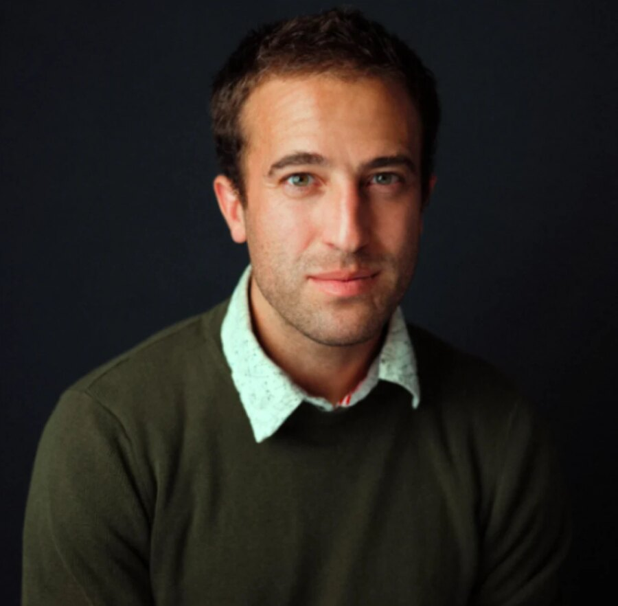

Three descriptions of one person, each with less in it. The work asks how little description it takes before someone else can walk in.
Watson Hartsoe is a research engineer and creative technologist who builds working tools for generative media, filmmaking, and worldbuilding. He is a PhD candidate in Digital Media at Georgia Tech, where he develops systems for a problem now shared across creative and technical fields: machines can produce more images, video, code, and possible worlds than people can meaningfully inspect, organize, or shape. His recent work turns that abundance into usable instruments, including browser-based filmmaking systems, networked 3D environments, and compilers that translate formal languages into interactive experiences. He holds an MS in Human-Computer Interaction from Georgia Tech and previously conducted Fulbright fieldwork in Honduras. His work has been recognized by the ITU AI for Good platform, Georgia Tech's AI Competition, CREATE-X, and the Neu Wave AI Film Festival.
Feature film with poet and filmmaker Mark Anthony Thomas. The poem becomes a place.
Assembly is sampling, not cutting. When footage is abundant, cutting-down is the wrong verb.
The image arrives before the movie. It may be the moment the film stops thinking.
A procedural film engine you can read while it runs.
The same engine, run as a continuous field rather than discrete frames.
A bird eats a blueberry; two turns later it returns, untouched. Can a generative system remember? Presented at ELO 2026.
A picture is cheap. A build is legal parts, exact placements, and real connections. Built on LDraw.
The door is not the event. Without the hidden run record, the conversation is only a story.
Reads a face, assigns an emotion, returns a gumball. The label is probably wrong. The gumball is real.
Text as an operative control surface for reality. Written with Jay David Bolter.
The scene arrives whole enough to feel inevitable. Then the machine writes the next world. The LEGOS framework.
Captain Cook and seven agent-based models. History does not enter code whole; it arrives through a hand.
Documents where emotion-recognition systems mislabel affect. Published at NordiCHI 2024.
A crime scene in eight exhibits: how agency migrates between person and machine after applause, liability, grief, or embarrassment arrives.
An illustrated essay on chatbot advice, dependency, harm, and the migration of responsibility between users, companies, and institutions.
Everything grows on one tree. 34 projects picked by hand, 311 repositories in the grove. In the film, every orange is a link, and each one is as ripe as the work.
- Ripe 27
- Hand-picked, or worked on for months and still in use: instruments, sustained practice, 150+ authored file touches.
- Ripening 104
- Prototypes and sprints. Published and growing, not yet load-bearing.
- Green 81
- Seeds and flash sketches. One sitting, a first probe.
- Blossom 35
- A name and an intention. The repository is still nearly empty.
- Fallen 64
- Quarantined, or unpublished and untouched for a year. On the ground, still there to be read.
Ripeness is read from each repository's size, lifespan, last activity, publishing status, and its creator-trail audit, as of April 30, 2026.
Current Research Gateway
Operation DescribeCentral research engine: ekphrasis, thick description, and generative AI converge into worldtext theory.Synthetic Culture Systems
METISIMMyth as adaptive computation rather than static content. Mythos Canon78 documents: chapters, viewers, manifestos, film systems, and defense materials as navigable research surface. Myth as OSLanguage is the root process that scripts reality; media are the engines that run it. ArkaduNoah’s Ark meets Nelson’s Xanadu: a hyperlinked archive cosmology for AI filmmaking.Operative Media Pedagogy
Ecology of MediaOperative ekphrasis as public video practice: theory composed with AI across image, voice, and episode. The Medium as OperatorCarey vs Kittler, operative ekphrasis, AI text-image systems, prompt rewriting. ABC-FLIX / ICAROBEFLIX-128 lineage: a unified production bus that harnesses cross-iframe instruments through a hardened message router.Operative Instruments
MOTOThe highest-density instrument in the constellation (1541 touches). Sound, broadcast, and media deck infrastructure. Sense RitualDigital architectures that condition cognition through ritual repetition: prompts become playable instruments. Pretext FieldSpatial scholarship instrument: mapping how urban environments are manufactured, stratified, and perceived. Blue Deli / Blue Belt FilmsCollaborative AI filmmaking infrastructure: matrix editor, world prompt, emergent narrative as operative media production.Research Lineage
TRACTOR / WAGWords Assemble Geometry: language as executable spatial specification. RipplesRelational Imagination of Perspective, Presence, and Latent Ecologies in Space. Accepted at ELO 2026. LEGOSLocation, Entity, Goal, Obstacle, Shift, Solution — a structural grammar for narrative. Ethics InfrastructurePrompts as executable specs. Ethical constraints built into workflow and interface states. Twine Bridge / Island EcologyA bridge between Twine-based interactive fiction and structured ecological narrative. Fourth ShieldA neurosymbolic simulation journey from ancient poetry to executable code.Cultural Modeling Interfaces
Growing EntanglementsCultural theory as digital interfaces: Sahlins, Obeyesekere, Captain Cook, resistance topology. Rosetta ProtocolTerminal-like viewer turning scattered HTML artifacts into browsable research surface. Hyperclay / UncontractingInterface as philosophical apparatus: boundaries, meanings, agreements dissolve through interaction.Legacy Participatory Worldmaking
Legacy PortfolioEarlier public identity: virtual environments, participatory design, museums, youth programs. Hubs CloudMuseum collections becoming inhabitable social VR spaces. Future OceansEnvironmental futures as web VR worlds through tangible making and ocean robotics. Life CycleMyth, migration, cardboard, Scratch, and Makey Makey as computational storytelling. Pinball SandboxGames, circuits, and recycled materials as tangible computing. Future ScoutsYouth development as civic futures prototyping through speculative design. Leimert Phone CompanyAfrofuturist civic imagination through autonomous cars, AR, and community worldbuilding. Ojo JovenYouth photography as community narrative infrastructure in Honduras. Artes Sin FronterasParticipant observation and arts-based research in Central America. Hogares SosteniblesHousehold sanitation as ecological interface in Guatemala.Public Theory Layer
Medium EssaysPublic-facing argument stream on AI culture, media theory, and worldtext-adjacent claims.My research studies how people work with generative systems: how a prompt becomes a description that participates in producing what it describes, and how that changes when the cost of generating images, video, and interactive worlds approaches zero. I develop this through a method I call thick prompting, a documented and repeatable way of studying how a model interprets, transforms, and resists human intention.
I work by building. Rather than writing about a tool in the abstract, I build the working system, test it with real users, observe where it fails, and revise it. This approach comes from earlier fieldwork: before human-computer interaction, I conducted Fulbright ethnographic research in Honduras, which taught me to treat any technology as part of the institutions, communities, and constraints it operates within, not as an isolated object.
The through-line across the work is making opaque computational processes tangible, testable, and accountable, so that the assumptions inside a system become something people can see, question, and revise.
Open to research and collaboration in generative media, human-computer interaction, and creative technology.